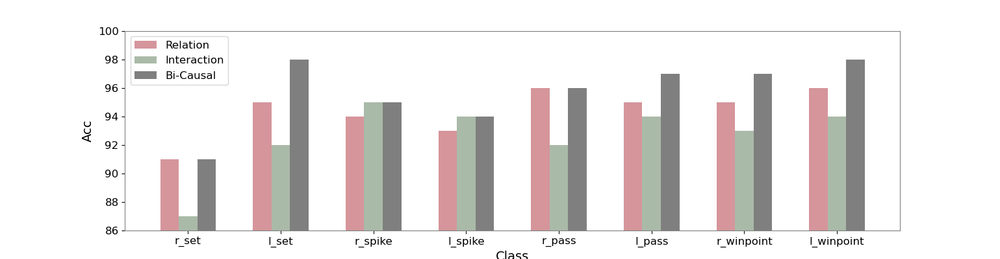

The figure below presents the accuracy of different categories on the Volleyball dataset. Our method exhibits excellent performance across various categories, with the lowest single class recognition accuracy down to 93%.

Current approaches in Group Activity Recognition (GAR) predominantly emphasize Human Relations (HRs) while often neglecting the impact of Human-Object Interactions (HOIs). This study prioritizes the consideration of both HRs and HOIs, emphasizing their interdependence. Notably, employing Granger Causality Tests reveals the presence of bidirectional causality between HRs and HOIs. Leveraging this insight, we propose a Bidirectional-Causal GAR network. This network establishes a causality communication channel while modeling relations and interactions, enabling reciprocal enhancement between human-object interactions and human relations, ensuring their mutual consistency. Additionally, an Interaction Module is devised to effectively capture the dynamic nature of human-object interactions. Comprehensive experiments conducted on two publicly available datasets showcase the superiority of our proposed method over state-of-the-art approaches.
Our Bi-Causal comprises two modules: Relation Module and Interaction Module, which are utilized to extract human relations and human-object interactions. A causality communication channel enables token exchanges between RM and IM. The final representations from RM and IM are merged for the ultimate GAR output. This structure simulates the bi-causality graph (right) with person features, final GAR representation, human relations, and human-object interactions. In causality graphs, solid lines indicate direct, dashed lines indicate indirect causal relationships.
Many methods employed attention mechanisms or graph neural networks to model human relations (HRs), which are considered as key information in group activity. However, while these methods have shown progress, the exploration of Human-Object Interactions (HOIs) in group-object scenarios remains largely unexplored. Understanding the physical movement of objects helps in analyzing key individuals in GAR. It motivate us to combine HOIs and HRs in GAR, and it naturally raises a question: What is the relationship between HRs and HOIs in understanding team behavior? Based on our observations and experiments, we posit bidirectional causality between HRs and HOIs. It suggests that HRs and HOIs mutually forecast each other in both directions, implying that a change in one may anticipate the other.
We utilize t-SNE to project the group activity representations onto a two-dimensional plane. The results depicted in the figure show that describing activities using both HRs and HOIs concurrently yields superior performance compared to using either HRs or HOIs in isolation. Moreover, exploring bidirectional causality between HRs and HOIs further enhances the
Compared to other methods, ours demonstrates better stability and achieves excellent results across all categories. This is because Bi-Casal comprehensively understands collective behavior from both interpersonal relationships and human interaction perspectives, considering their mutual influence and facilitation. This allows Bi-Casal to capture more pattern differences between categories, resulting in better performance.
Figure below visualizes the feature distributions learned from the test set of the Volleyball dataset. Our method adds inter-class differences compared to the COMPOSER and GroupFormer, making the classification boundaries more visible.
The figure below presents the accuracy of different categories on the Volleyball dataset. Our method exhibits excellent performance across various categories, with the lowest single class recognition accuracy down to 93%.
The confusion matrices below show the comparison result of our method with the COMPOSER and GroupFormer. One of the main advantages of our approach lies in the identification of two classes, pass and set. In group activity pass and set, human actions and relations are more similar, but there are large differences in human-object interaction. Our IM and the bidirectional causality between HRs and HOIs can make Bi-Causal aware of these differences and get relatively better results.